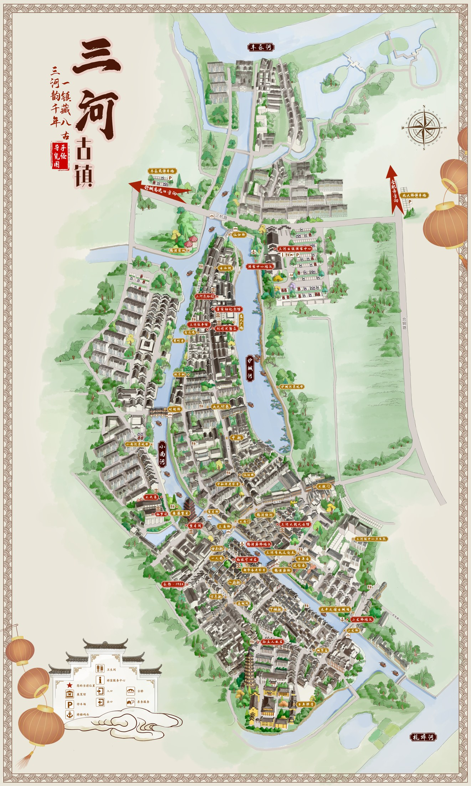

SANHE · PHOTO-LED DISCOVERY
镜游三河
01 / 发现
先被画面吸引，
先被画面吸引，
再认识一个地方。
选择前不显示地点名，减少文字与知名度偏差。凭第一眼感觉收藏或略过即可。
也可以拖动照片做决定
02 / 收藏
我想去的画面
照片已经自动还原为真实地点。相同地点会被归在一起。
收藏还是空的
先从真实照片里挑几张让你想停下来的画面。
03 / 地图
画面落在了哪里
只显示你收藏过的地点。点选标记，继续探索附近体验。
已收藏
水系

底图：三河古镇景区手绘导览图